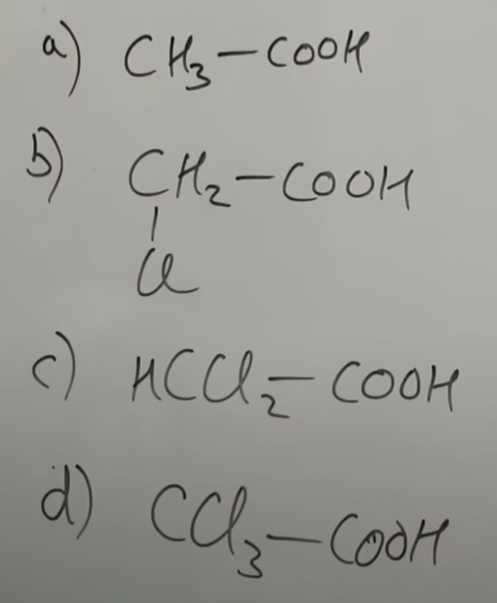
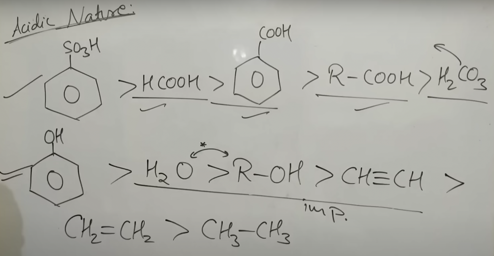

GOC : INDUCTIVE EFFECT AND ACIDIC STRENGTH
YOUTUBE PLAYLIST LINK
ALL TOPICS IN THE PLAYLIST :
- Inductive Effect and Acidic Strength
- Resonance 01: How to Draw Resonance Structures
- Resonance 02: Stability of Resonance Structures
- Resonance 03: Mesomeric Effect Complete Topic
- Hyperconjugation Effect in Carbocation, Free Radical
- Aromatic, Anti-Aromatic, and Non-Aromatic Compounds
- Carbocation - Reaction Intermediate 01
- Free Radical and Carbanion - Reaction Intermediate 02
- Carbene || Singlet and Triplet Carbene - Reaction Intermediate 03
- Rearrangement of Carbocation | Hydride, Methyl, and Phenyl Shifting
INDUCTIVE EFFECT AND ACIDIC STRENGTH
YOUTUBE LECTURE LINK
TOPICS IN THIS LECTURE :
- Introduction to GOC and Its Importance (00:00)
- What Is Studied in GOC (04:28)
- Inductive Effect: Definition and Basic Idea (07:43)
- Plus I, Minus I, and Transmission Through Sigma Bonds (10:18)
- Stability of Charged Species by Minus I Effect (14:23)
- Acidic Strength and Conjugate-Base Stability (22:55)
- Plus I Effect and Acidity of Alcohols (25:00)
- Net Effect of Substituents in Carboxylic Acids (38:32)
- Ka, pKa, and the Reliable Measure of Acidity (43:30)
- Memorized Acidity Order of Common Organic Species (48:01)
- Mixed Comparisons: Carboxylic Acids and Phenols (53:09)
- When Atom Type Matters More Than Inductive Effect (62:30)
- Hybridization, Terminal Alkynes, and Benzene (67:30)
- Period-2 Hydrides and Final Homework (75:52)
-
- General Organic Chemistry (GOC) is the foundation of organic chemistry.
-
It is used to explain:
- reactivity,
- stability of intermediates,
- acidity/basicity,
- comparative stability of compounds.
- Many later chapters depend on GOC concepts.
- Basic IUPAC nomenclature should be known before starting GOC.
-
-
Main areas of GOC:
- Electronic effects
- Reaction intermediates
- Reaction mechanisms
-
Electronic effects discussed in GOC:
- Inductive effect
- Electromeric effect
- Hyperconjugation
- Resonance / mesomeric effect
- Among these, electromeric effect is temporary; the others are treated as permanent.
- This lecture starts with the inductive effect.
-
Main areas of GOC:
-
- Definition: Inductive effect is the partial displacement of \( \sigma \)-bond electrons due to electronegativity difference.
- It operates through \( \sigma \) bonds only.
-
For \( \mathrm{C-X} \), if \( X \) is more electronegative than
carbon:
\( \mathrm{C^{\delta +}-X^{\delta -}} \) - If the attached atom/group is less electronegative than carbon, electron density shifts toward carbon.
- It is a partial effect, not complete bond breaking.
-
- \(-I\) effect: electron-withdrawing effect through \( \sigma \) bonds.
- \(+I\) effect: electron-donating effect through \( \sigma \) bonds.
-
Reference point is carbon:
- group more electronegative than carbon \( \rightarrow -I \)
- group less electronegative than carbon \( \rightarrow +I \)
- Inductive effect is transmitted through \( \sigma \) bonds.
- Its strength decreases with distance.
-
- Charged species are generally less stable than neutral species.
- Greater charge dispersal \( \rightarrow \) greater stability.
- \(-I\) groups stabilize a nearby negative charge by withdrawing electron density.
-
For halogens:
\( \mathrm{F > Cl > Br > I} \) in \(-I\) effect - Hence, stronger \(-I\) effect gives greater stabilization of a nearby anion.
-
Common \(-I\) order:

- Hydrogen is taken as the reference point.
-
-
For an acid:
\( \mathrm{HA \rightleftharpoons H^+ + A^-} \) - Acid strength depends on conjugate-base stability.
- More stable \( \mathrm{A^-} \) \( \rightarrow \) stronger acid.
- \(-I\) effect generally increases acidity by stabilizing the conjugate base.
-
Thus, stronger \(-I\) substituent at the same position usually
gives stronger acid.

-
Application:
- \( \mathrm{NO_2CH_2COO^- > FCH_2COO^- > CH_2{=}CHCOO^-} \)
- Corresponding acidity follows the same stabilizing trend of the conjugate base.
-
For an acid:
-
-
\(+I\) effect is shown mainly by alkyl groups.

-
Order of \(+I\) effect among alkyl groups:
\( \mathrm{3^\circ\ alkyl > 2^\circ\ alkyl > 1^\circ\ alkyl > CH_3} \) - For alcohols, acidity depends on stability of the alkoxide ion.
- \(+I\) groups push electron density toward oxygen and destabilize \( \mathrm{O^-} \).
-
Therefore:
more \(+I\) effect \( \rightarrow \) less acidic alcohol -
Acidity order:
methyl alcohol \( > \) primary alcohol \( > \) secondary alcohol \( > \) tertiary alcohol
-
\(+I\) effect is shown mainly by alkyl groups.
-
- Always consider the net inductive effect of the whole substituent.
- \( \mathrm{ClCH_2{-}} \): overall \(-I\) effect.
- \( \mathrm{HOCH_2{-}} \): in this lecture, treated overall as weak \(+I\) in the given comparison.
-
Representative acidity trend:
- \( \mathrm{ClCH_2COOH} \): most acidic
- \( \mathrm{HOCH_2COOH} \): intermediate
- \( \mathrm{CH_3COOH} \): least acidic
- Reason: net \(-I\) effect increases acidity; net \(+I\) effect decreases acidity.
-
-
For
\( \mathrm{HA \rightleftharpoons H^+ + A^-} \),
\( \mathrm{K_a = \dfrac{[H^+][A^-]}{[HA]}} \) - Larger \( \mathrm{K_a} \) \( \rightarrow \) stronger acid.
- \( \mathrm{p}K_a = -\log K_a \)
- Smaller \( \mathrm{p}K_a \) \( \rightarrow \) stronger acid.
- For broad comparisons across different classes, \( \mathrm{K_a} \) / \( \mathrm{p}K_a \) is more reliable than a single inductive-effect argument.
-
For
-
-
Useful memorized acidity order:
- \( \mathrm{ArSO_3H} \)
- \( \mathrm{HCOOH} \)
- Benzoic acid
- \( \mathrm{RCOOH} \)
- \( \mathrm{H_2CO_3} \)
- Phenol
- \( \mathrm{H_2O} \)
- \( \mathrm{ROH} \)
- \( \mathrm{HC{\equiv}CH} \)
- \( \mathrm{H_2C{=}CH_2} \)
- \( \mathrm{CH_3CH_3} \)
-

- In the lecture, methanol is treated as slightly more acidic than water in the cited comparison.
- Only terminal alkynes show acidic hydrogen in this context.
-
Example:
\( \mathrm{H_2O > C_2H_5OH > HC{\equiv}CH} \)
-
Useful memorized acidity order:
-
- First compare the class of compound, then the substituent effect.
- Carboxylic acids are generally much more acidic than phenols.
- Within the same class, substituent effects can significantly change acidity.
-
In nitro-substituted phenols:
- dinitrophenol \( > \) mononitrophenol in acidity
- para-nitrophenol \( > \) meta-nitrophenol in the lecture comparison
- Reason: at ortho/para positions, mesomeric effect also operates; at meta, mainly inductive effect is considered.
-
- Inductive effect should be compared only when the charged atom is the same or comparable.
-
Example:
- alcohol \( \rightarrow \mathrm{RO^-} \)
- amine \( \rightarrow \mathrm{RNH^-} \)
- These anions carry charge on different atoms.
-
Rule:
- negative charge is more stable on a more electronegative atom
- positive charge is more stable on a less electronegative atom
- Therefore, alkoxide ion is more stable than the corresponding amide-type anion.
- Hence: alcohols are more acidic than amines.
- Example: ethanol is more acidic than methylamine.
-
- For hydrocarbons, acidity depends on stability of the carbanion formed after deprotonation.
-
Relevant conjugate bases:
- \( \mathrm{HC{\equiv}C^-} \)
- \( \mathrm{H_2C{=}CH^-} \)
- \( \mathrm{CH_3CH_2^-} \)
-
Electronegativity of carbon by hybridization:
\( \mathrm{sp > sp^2 > sp^3} \) - More \( s \)-character \( \rightarrow \) greater electronegativity \( \rightarrow \) better stabilization of negative charge.
-
Therefore:
\( \mathrm{HC{\equiv}CH > H_2C{=}CH_2 > CH_3CH_3} \) in acidity - Only terminal alkynes are acidic in this comparison.
-
Lecture order including benzene:
\( \mathrm{HC{\equiv}CH > C_6H_6 > H_2C{=}CH_2 > CH_3CH_3} \)
-
- Compare acidity of period-2 hydrides using stability of conjugate bases.
-
Conjugate bases:
- \( \mathrm{CH_3^-} \)
- \( \mathrm{NH_2^-} \)
- \( \mathrm{OH^-} \)
- \( \mathrm{F^-} \)
-
Since negative charge is more stable on the more electronegative
atom:
\( \mathrm{HF > H_2O > NH_3 > CH_4} \) -
Homework from lecture: decreasing basic
strength in gaseous phase:
- tert-butylamine
- isopropylamine
- ethylamine